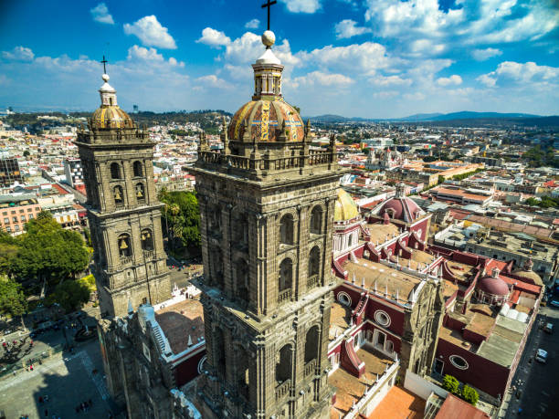

Puebla es un estado ubicado en el centro de México. Su capital es la ciudad de Puebla, conocida por su rica historia, arquitectura colonial y gastronomía. El estado tiene una superficie de 34,351 km² y una población de aproximadamente 6.9 millones de habitantes, según el censo de 2020. Puebla es famoso por su producción de mole, talavera y sus sitios turísticos históricos como Cholula y los Museos del Arte.
El Festival Internacional del Folklore es una de las tradiciones más emblemáticas de Puebla, celebrada cada año en septiembre. Además, la Feria de Puebla, que tiene lugar en mayo, es una fiesta que mezcla música, danza, gastronomía y actividades culturales, atrayendo visitantes locales y foráneos.
Entre los platillos típicos de Puebla destacan:
| Dato 1 | Dato 2 | Dato 3 |
|---|---|---|
| Puebla es reconocida como una de las ciudades coloniales más bellas de México, con numerosos sitios históricos y arquitectónicos. | La producción de Talavera en Puebla es uno de los distintivos culturales más reconocidos a nivel nacional e internacional. | El estado es también famoso por su amplia variedad de platillos como el cemita, las cemitas poblanas y los tacos árabes. |